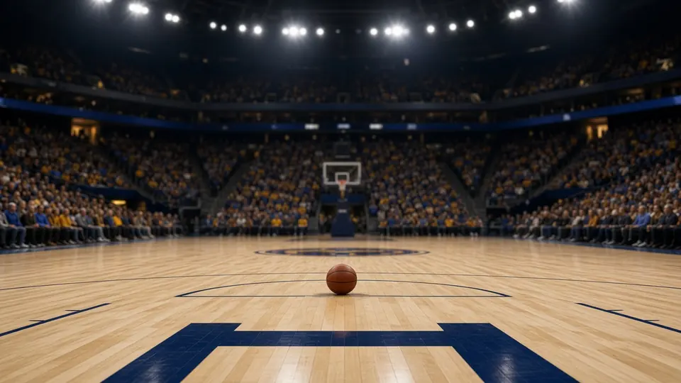

Urban Concierge - Bay Area
Saturday Nov 7 – Monday Nov 9, 2026 · Snapshot compiled Fri Nov 6, 2026, 10:10 pm PT (Urban Concierge - Bay Area)
- Coastal Flood Advisory, SF: through 4 pm Fri Nov 13. Up to 1.6 ft of inundation in low-lying shoreline areas.
- Beach Hazards Statement, SF: through 10 pm Mon Nov 9. Sneaker waves, rip currents, 12–16 ft breakers.
What's on

closing day Sat Nov 7
Every Saturday Night (A.C.T. / SFBATCO)
Strand Theater, 1127 Market St.
Details →



Isabel Leonard Sings Ravel: Sun Nov 8, 2 pm
SF Symphony
Davies Symphony Hall, 201 Van Ness Ave.
Details →
Mon Nov 9, 7 pm PT
Warriors vs. New Orleans Pelicans
Chase Center (listed as a home game on the Warriors' official schedule).
Details →
More in this brief
Where to eat

No Yelp ratings (Yelp blocks automated loads). Rotated this run; descriptions from Michelin Guide page text (indexed) and the restaurants' own sites.
State Bird Provisions, Fillmore, SF (1529 Fillmore St) · Californian · Michelin One Star. Michelin describes dim sum-style carts of seasonal California small plates (dumplings, savory pancakes, liver mousse) in an energetic room, with reservations hard to get. Own site lists Sun–Thu 5:30–10 pm, Fri–Sat 5:30–10:30 pm; upcoming closures include Nov 17 (not this weekend). (415) 795-1272. https://www.statebirdsf.com/ · https://guide.michelin.com/en/california/san-francisco/restaurant/state-bird-provisions
Kin Khao, Union Square, SF (55 Cyril Magnin St, in the Parc 55 hotel) · Thai / Californian · Michelin One Star. Chef Pim Techamuanvivit; Michelin highlights layered, produce-driven Thai cooking such as steamed curry mousse (hor mok) and green curry with local rabbit, with some serious heat. Lunch daily 11:30 am–2 pm; dinner Sun–Thu 5:30–9 pm, Fri–Sat to 10 pm. (415) 362-7456. https://www.kinkhao.com/ · https://guide.michelin.com/us/en/california/san-francisco/restaurant/kin-khao
Birdsong, SoMa, SF (1085 Mission St) · Contemporary / American · Michelin Two Stars (carried from the last brief). Chef Christopher Bleidorn; live-fire cooking with a delicate touch. +1 415-369-9161. https://www.birdsongsf.com/
Getting around

Muni and cable cars: $2.85 single ride with Clipper or tap-to-pay ($3.00 cash), good 120 min. Day pass $5.70. Cable car $9.00. Visitor Passports $15 / $35 / $47 (1/3/7-day). Youth 18 and under ride free (not cable cars). Chase Center tickets are a same-day Muni fare Sat and Mon. Sunday: F streetcar switchbacks toward the Ferry Building 8:30 am–3 pm and the 8, 28 and 39 reroute for the parade; the 6 Hayes/Parnassus reroutes for Head West. https://www.sfmta.com/getting-around/muni/fares
BART (live check ~10:05 pm Fri):
- No delay advisories.
- One elevator out: Berryessa station elevator.
- Yellow Line late-night single tracking in Contra Costa: Nov 9–11 (starts Mon night) and Nov 12–13.
- Powell St. entrance at 4th and Market closed through Nov 10.
- Coming up: Green Line out and 24th St–Daly City bus bridge Nov 14–15; reduced OAK service night of Nov 14.
https://www.bart.gov/schedules/advisories
Bikes and scooters: Lyft Bike $1 to unlock + $0.19/min classic or $0.49/min ebike; day pass $15 (from the last check). https://www.lyft.com/bikes/bay-wheels/pricing
SFO: Rental Car Center via AirTrain Blue Line (24 hours). Lyft/Uber on Level 5 of the Domestic Garage; taxis at Arrivals center islands. Southbound drivers to SFO from downtown should use I-280 until 6 am Mon (Hospital Curve closure). https://www.flysfo.com/passengers/ground-transportation
Where to stay

Union Square has most major hotels, the best transit links, and Kin Khao downstairs at Parc 55. Embarcadero hotels are steps from Saturday's market; Mission Bay/SoMa suits the two Warriors games. Fisherman's Wharf hotels sit on Sunday's parade route, so expect closures that morning. Civic Center/Hayes Valley is walkable to Davies for Sunday's Symphony matinee and the Head West market. https://www.sftravel.com/neighborhoods
Assumptions and refresh
- Public data only. Re-checked Fri Nov 6, 2026, about 10:05–10:15 pm PT: NWS forecast grid and active alerts (api.weather.gov), Caltrans District 4 news index and the new Marin CAPM release, BART advisories page and BSA/elevator API, A.C.T., Foodwise, SF Zoo ZooLights, SFMTA parade page, Warriors game page and schedule, State Bird Provisions and Kin Khao sites, and indexed Michelin text (direct Michelin fetch returns 403). Nobody was contacted and nothing was signed up for.
- Window is Sat through Mon.
- This is a snapshot. Urban Concierge - Bay Area refreshes it every 8 hours (6 am, 2 pm, 10 pm PT). Times are Pacific standard time. Prices appear only where a cited page lists them.
Not verified
- Yelp ratings (blocked); reservation availability not checked.
- Every Saturday Night showtimes and prices; Symphony ticket prices (Symphony page bot-walled; Sunday date carried from earlier official confirmation).
- ZooLights per-day hours and prices carried from the 2 pm check (page re-confirmed for dates only).
- Warriors vs. Pelicans: no individual game page read, only the official schedule listing; ticket prices not checked.
- Head West Marketplace hours and vendors (only SFMTA's closure notice confirms it).
- Hospital Curve, Bay Bridge and SR-29 releases weren't re-read in full tonight; still listed on the Caltrans index.
- Lime and Spin pricing; Bay Wheels pricing carried.
- Mill Valley ramp closures depend on tides; no Caltrans schedule.
What changed since the last brief
What changed since the last brief (Fri 2:05 pm): Window rolls forward to Sat–Mon, so Friday-only events and Friday daytime Caltrans work drop off. Added Monday: Warriors vs. Pelicans (7 pm) and the Marin US-101 night closures resuming Mon 10 pm (new Caltrans release). NWS alerts reissued 6:31 pm Fri with a Monday high tide (~10:35 am, 7.4 ft MLLW). Sunday now partly sunny, near 69. BART: one elevator out at Berryessa; Yellow Line single tracking starts again Mon night. Restaurant picks rotated to State Bird Provisions and Kin Khao.